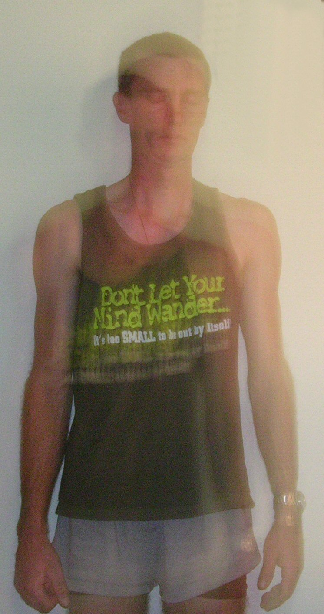

Etheric Projection
Here we are going to focus our attention on the etheric body, which is used in bi-location. But first we will learn how to sense the ether body.Introduction
The etheric body, ether-body, æther body, or vital body is one of the subtle bodies in esoteric philosophies, in some religious teachings and in New Age thought. It is understood as a sort of life force body or aura that constitutes the "blueprint" of the physical body, and which sustains the physical body.The Etheric Body

When this picture was taken. I was
Focusing on moving the etheric body
Across the roomIf you are to understand clearly, it is essential that I lay down certain propositions anent the etheric body which should govern all the student's thinking; if they do not, he will be approaching the truth from the wrong angle; this, modern science does not do. The limitation of modern science is its lack of vision; the hope of modern science is that it does recognize truth when proven. Truth in all circumstances is essential and in this matter science gives a desirable lead, even though it ignores and despises occultism, Occult scientists handicap themselves either because of their presentation of the truth or because of a false humility. Both are equally bad.
There are six major propositions, which govern all consideration of the etheric body, and I would like to present them to students as a first step:
1. There is nothing in the manifested universe - solar, planetary or the various kingdoms in nature - which does not possess an energy form, subtle and intangible yet substantial, which controls, governs and conditions the outer physical body. This is the etheric body.
2. This energy form - underlying the solar system, the planets and all forms within their specific rings-pass-not - is itself conditioned and governed by the dominant solar or planetary energy which ceaselessly and without break in time, creates it, changes and qualifies it. The etheric body is subject to ceaseless change. This being true of the Macrocosm, is equally true of man, the microcosm, and - through the agency of humanity - will eventually and mysteriously proves true of all the subhuman kingdoms in nature. Of this, the animal kingdom and the vegetable kingdom are already evidences.
3. The etheric body is composed of interlocking and circulating lines of force emanating from one or other, or from one or many, of the seven planes or areas of consciousness of our planetary Life.
4. These lines of energy and this closely interlocking system of streams of force are related to seven focal points or centres to be found within the etheric body. These centers are related, each of them, to certain types of incoming energy. When the energy reaching the etheric body is not related to a particular centre, then that centre remains quiescent and unawakened; when it is related and the centre is sensitive to its impact, then that centre becomes vibrant and receptive and develops as a controlling factor in the life of the man on the physical plane.
5. The dense physical body, composed of atoms - each with its own individual life, light and activity - is held together by and is expressive of the energies which compose the etheric body. These, as will be apparent, are of two natures:
a. The energies, which form (through interlocked "lines of forceful energy") the underlying etheric body, as a whole and in relation to all physical forms. This form is qualified then by the general life and vitality of the plane on which the Dweller in the body functions, and therefore where his consciousness is normally focused.
b. The particularized or specialized energies by which the individual (at this particular point in evolution, through the circumstances of his daily life and his heredity) chooses to govern his daily activities.
6. The etheric body has many centres of force, responsive to the manifold energies of our planetary Life, but we shall consider only the seven major centres, which respond to the inflowing energies of the seven rays. All lesser centres are conditioned by the seven major centres; this is a point which students are apt to forget. It is here that knowledge of the egoic and of the personality rays is of prime usefulness.
The Three Aspects Of The Etheric Heart
The Heart chakra can also be found within the astral plane and is the middle point of the etheric heart and is known as the astral permanent atom of the astral body. Cosmic liquid and the element is water and it is known as the astral light.
The Sacred heart is also found in etheric body and is the 1st etheric ether beyond the physical plane. Known as the physical permanent atom found in the etheric body. The element is ether
Etheric Projection
When a person projects their etheric body into the etheric or astral plane it is quite common to feel a rocking sensation in the physical body. It is also known to me that an etheric projector can also be seen on the physical plane, this in the past has been known as bi-location. When a person is visited by a spirit the temprature in the room may drop and you may feel a cold sensation of energy in the room. This is common with spirits but an etheric projector is not of spirit they are living and the etheric body being projected is meta-physical there fore the energy of an etheric projector is warm. Being of live physical matter. It is common however when the etheric body of an etheric projector approaches the etheric body around a physical body as the energies of the two etheric bodies blend to feel a cold sensation at first. This is known as the telepathic bridge, it is here the telepathy is possible between the etheric projector and the physical body of the subject. These telepathic bridges between the projector and physical subject can be found on the etheric plane as lines of energy between the two subjects we also see the lines of etheric ether between us and nature this is known as the etheric web of meta physical matter surrounds all living things. Here telepathic interplay is also possible in the way of empathy, telepathy, and telekinesis.
These abilities in the physical mind are located to the Per-frontal lobes of the brain or forehead area. All wingmakers, Celestial light Beings, World Servers, and Ascended Masters are aware of these Per-frontal lobes and their abilities. Each member of the seven is very aware of these lobes and their etheric ability since we are all etheric projectors and can move across the etheric plane freely.Lessons in the etheric body & Etheric Projection
Here we are going to focus our attention on the etheric body, which is used in bi-location. But first we will learn how to sense the ether body. As you know when you first learn to see auras the first thing you see is the etheric layer of the aura I thick band of white energy around the physical body.
But it is it is also possible to touch the ether body. See it is the etheric body the senses things like hot and cold. So here we will focus on etheric touch and the sensation on etheric sense.Etheric Sensing Technique
Now in this first technique you can do it alone or work with a friend. Firstly briskly rug your hands together and stimulate the hand chakras. When your hands are nice and warm stop.
Now here we are going to focus on etheric sense if your working alone, but first make sure your arm is free of any obstructions if your wearing a long shelve shirt pull your shelve up on your left or right arm or put on a short shelve shirt on instead. Now to heighten your ability to sense etheric feeling we must first remove one of your physical senses so close your eyes. Now hold out your arm that you are going to use for the sensing and with your other hand move it across the other arm slowly about 1 inch from your physical body. Do not touch your physical body with your hand. You should feel a warm sensation move across your arm. If your working with a friend decided who will be sensing first and who will be touching, then change places.Etheric Touch Technique
Now in this next technique you work alone. For this technique you need a clear surface like a table or counter top. Rub your hands briskly to stimulate the hand chakras, when your hands are warm stop.
Then in your own time close your eyes and remove your sense of sight. Now in the technique your etheric sense comes into play as soon as you close your eyes, the first thing you need to do in this technique is sense the table with your etheric touch not an easy thing to do when your starting out. So try it now lower your arm and move your hand down so your hand is one inch above the table and stop it there. Once you have found the counter with your etheric touch wave your hand over the counter slowly and noticed every sensation. If you hit the top or counter before you sense it don’t give up even if you failing your learning to sense things.Etheric Motion Exercise
This technique will give you an insight into the phantom limb sensation that a person feels when they lose a limb. This technique is very hard to master so it may take you some time.For this technique relax and get comfortable then close your eyes and remove the sense of sight. In your own time hold your hands out in front of you.

The centers below the diaphragm, i.e., the solar plexus center, the sacral center and the center at the base of the spine, are controlled by the four ethers of the planetary physical plane; the centers above the diaphragm, i.e., the heart center, the throat center, the ajna center and the head center, are controlled by the four cosmic ethers, to which we give the names of the energies of the buddhic plane, the energies of the atmic plane, the energies of the monadic plane and the energies of the logoic plane. The First Ether flow through the Physical permenent atom of the etheric heart and then into the sacred heart chakra just below the heart chakra to the left. The Astral Permenent Atom is found in the emotional body and moves through the heart chakra. While the energy of the mental unit moves through the thymus chakra.
Spiritual Triad
Atmic permanent atom is also known as the centre of spiritual will and connects with the Cerebellum chakra. And is found in the Atmic plane and is the spiritual center or higher self as it is known The Buddhic permanent atom is known as intuition center and connects with the Thymus chakra or spiritual heart as it is known. And is found in the Buddhic plane (Astral Body)
The Mental permanent atom is known as mind and cornects with the Pineal chakra or genric mind as it is known. and is found in the mental plane (mental body)
Etheric Weavers - My Encounters
One way I would describe our etheric doubles is being etheric weavers of energy of the etheric plane. When we meet in the forest temple of the earth energies around the pillars we seem to blend our etheric energy together into one etheric stream and send it out into the etheric plane. Family and friends have seen my etheric double on the physical plane doesn’t matter who sees my etheric double they always describe the same description of me dressed in a white robe with pure white wings and a golden band of energy around my head. One women in 2001 was sleeping in a caravan in the next room when she was tapped on the shoulder by my etheric double waking her from her sleep smiling at her then waving to her and from what she had witnessed and told me was that then it vanished.
Another person was staying with me when one night we had gone to bed at the same time in different rooms I had fallen to sleep quite soon after going to bed. When suddenly I was awoken by a scream from the next room. So when I heard my brother in-law scream I ran to his aid the minute I entered the room he was quite shaken and looked at me saying what in the hell you were just floating over me dressed in white with wings and a halo.
Another friend last year and I were talking at work we had a lot of things of similar interest one night he had gone out side for a smoke when he turned around and found me standing in the living room what he observed was me standing there on the other side of the window dressed in white with wings and the gold band around my head he went on to tell me as I left the window rattled from my vibration. But on this occasion I was not asleep it was around 6pm and I had noticed the etheric body had projected like it had something of great importance to do.
Another encounter I remember well was one night when I was drifting of to sleep I had what I thought was a vision of a women sitting on her lounge in the living room reading a book when she lowered her book looking at me with her mouth dropped eyes wide open with a look on her face that I would have to describe as a NOWAY expression at that point I felt my etheric double leave and I fell asleep I don’t remember what happen next. From the experience I get the impression that the etheric double works through the etheric plane and into the physical plain as a world server.
I’ve also noticed that there is a lot of energy in the prefrontal lobes when this type of projection takes place. Much the same as when I project through the tunnel of light into the forest of the earth energies.
Sage / Enchantresses Of The Etheric Plane
I had been aware of the name sage since I was young and knew that it was one of the titles the a male member of our group would be known how ever my sister is also aware of the title sage as a male title but she is known as a enchantresses on the Etheric plane and I am also aware of the title.